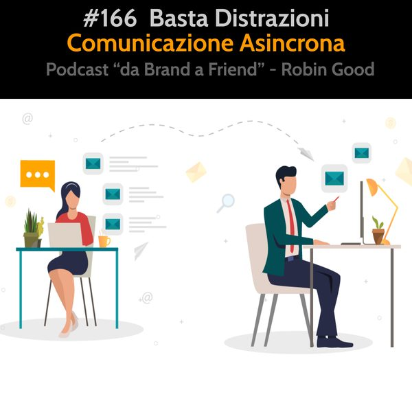

Basta Interruzioni: Comunicazione Asincrona

*Basta Interruzioni: Comunicazione Asincrona*
Il telefono è morto. Almeno per me. Defunto e seppellito. Non squilla più e non lo tengo addosso. Lo prendo, lo accendo e lo guardo quando decido io. Non quando qualcun altro vuole all'improvviso parlare con me senza bussare.
In un epoca nella quale viene glorificato il fare più cose allo stesso tempo (multitasking) e il tempo medio di concentrazione non supera i sei minuti, mi sono reso conto che
a) non avevo alcun bisogno o necessità di essere distratto e/o interrotto quando qualcun altro desiderava comunicare con me
b) posso vivere una vita più serena, tranquilla e molto più produttiva se smetto di seguire le cattive abitudini e modi di fare di chi mi circonda.
Il telefono, così come lo utilizziamo oggi, è un elemento che ci distrae costantemente e che limita in maniera molto significativa la nostra capacità di dedicarci con continuità a qualcosa e di mantenere la nostra concentrazione e fuoco su un argomento specifico.
Per questi motivi ho deciso da più di 10 anni, di rimettere il telefono nella dimensione che gli appartiene. Il silenzio.
Il telefono, per come io vedo le cose, è un mezzo al mio servizio per comunicare con altri e per permettere agli altri di comunicare con me. Ma questo non vuol dire che debba essere usato per interrompere, distrarre o entrare nella vita di altri quando è meno opportuno.
Quindi, ciò che ho deciso di fare è stato semplicemente di rivedere il mio modo di usare questa tecnologia, e di integrarla nella mia vita in maniera da essere un reale complemento utile e non un peso intrusivo e poco educato.
Come?
Riprendendone il controllo al 100%. Decido io quando usarlo e quando non lo uso, lo metto in condizione di non distrarmi. Null'altro.
Chi desidera chiamarmi o parlare con me in diretta, può mandarmi un SMS o un messaggio via Whatsapp, Telegram o email e farmi sapere la sua necessità e la sua disponibilità. Stabilito un giorno e un orario comodo a entrambi, non ho alcun problema a rispondere a chi ha cortesemente stabilito con me appuntamento.
Idem faccio io con loro. Non chiamo nessuno all'improvviso senza preavviso, ma chiedo sempre prima attraverso un messaggio quando ci si potrebbe sentire e qual è il motivo per il quale voglio dialogare. Questo rende tutto più semplice.
Due o tre volte al giorno guardo al mio telefono e verifico chi mi ha cercato, chi mi ha lasciato messaggi e chi ha provato a interrompermi senza preavviso. Richiamo chi attende, rispondo ai messaggi e blocco chi mi ha chiamato senza che io gli abbia mai dato il permesso di farlo.
Non porto più il telefono addosso. Lo tengo in una borsa o in uno zaino che porto sempre con me. Ho spento suoneria e vibrazioni. Ho disattivato tutte le notifiche.
Quando voglio comunicare urgentemente con qualcuno gli scrivo. Gli dico di cosa ho bisogno di parlare e gli chiedo come lui preferisce dialogare con me (al telefono, via Skype, in una videochiamata, etc.) e quando. Una volta che lo so, agisco di conseguenza, non entrando mai nella vita degli altri all'improvviso.
La maggior parte dei miei dialoghi, scambi e confronti creativi con altre persone avviene ora in maniera asincrona. Usando Whatsapp, Telegram e qualsiasi altro tool in grado di permettermi di comunicare con gli altri in maniera asincrona.
Comunicare in maniera asincrona vuol dire utilizzare un approccio e una tecnologia che consente
alle persone che desiderano comunicare fra di loro di poterlo fare senza doversi telefonare in tempo reale.
Whatsapp, Telegram e altre piattaforme simili sono ideali per questo uso, così come gli SMS e le email.
Tu mandi un messaggio (scritto, audio o video) al tuo interlocutore ma senza obbligatoriamente interromperlo senza preavviso. Se il tuo interlocutore è anche lui un essere umano evoluto, può decidere lui come e quando verificare il suo telefono, e vedere chi lo ha cercato o gli ha inviato dei messaggi.
A questo punto, sarà lui a decidere, come e quando rispondere, prendendosi il giusto tempo e il momento ideale per potermi dare le sue risposte e pareri.
Così funziona la comunicazione asincrona.
Dirai: "che scoperta del ciufolo Robin! Io questo lo faccio tutti i giorni, di mandarmi messaggi su Whatsapp."
Si, è vero che lo fai tutti i giorni, ma non lo fai però con l'intenzione e nella modalità che ti ho appena descritto.
Ciò che infatti osservo è che nonostante le persone usino tecnologie e app che consentono di comunicare in asincrono, senza dover essere interrotti o distratti senza preavviso, le usano esattamente come il telefono.
Facendo ciò consentono non solo a chiunque di interromperli a piacimento ma innalzano in maniera esagerata l'opportunità di essere distratti grazie proprio a quegli squilli, suonerie, notifiche e avvisi che loro stessi impostano per far sì che chiunque possa rendere la loro vita più frammentata, superficiale e distratta di quanto sia realmente necessario o utile fare.
Per me una vita piena di distrazioni e interruzioni non richieste, non è vita.
Per me poter essere concentrati, a fuoco su ciò che desideriamo fare è essenziale.
Usare smartphone e telefoni così come osservo le persone fare, è un atto pericoloso di arresa inconsapevole alla tecnologia che deteriora in maniera assai apprezzabile le nostre capacità intellettuali e relazionali.
Per questo ho deciso di uccidere il telefono, nella forma e nei modi nei quali l'ho conosciuto, e di riprendere il controllo del mio tempo, e della mia serenità personale, decidendo nuovamente io come e quando comunicare con gli altri in base alle mie esigenze e ritmo di vita.
Lunga vita alla comunicazione asincrona. Morte al telefono, alle interruzioni e a chi mi usando il telefono in maniera becera, distrae e interrompe, entrando senza bussare, la serenità e concentrazione altrui.
Ascolta anche:
*Comunicazione Asincrona* - Episodio #66
https://www.spreaker.com/user/robingood/66-comunicazione-asincrona
Guide to Async Communication: https://almanac.io/docs/almanac-guide-to-async-communication-auNPKFCSXFVJg1mKUEnlmBVFz1x8NTkp
-------------
Info Utili
• Musica di questa puntata:
"Swing Low" by Birocratic - disponibile su Bandcamp:
https://birocratic.bandcamp.com/track/swing-low
• Dammi feedback:
critiche, commenti, suggerimenti, idee e domande unendoti al gruppo Telegram https://t.me/@RobinGoodPodcastFeedback
• Ascolta e condividi questo podcast:
https://gopod.me/RobinGood
• Diventa sostenitore:
sostieni il lavoro di Robin Good e tutti i contenuti e risorse utili che condivide costantemente
https://robingood.it
• Seguimi su Telegram:
https://t.me/RobinGoodItalia
(tutti i miei contenuti, immagini, audio e video in un solo canale)
oppure
Su Facebook:
https://facebook.com/RobinGoodItalia/
Su Instagram:
https://instagram.com/RobinGoodItalia
Su LinkedIN:
https://linkedin.com/in/RobinGood
• Newsletter:
http://robingood.it/toptools-newsletter
• Per info e richieste:
mailto: Ludovica.Scarfiotti@robingood.it